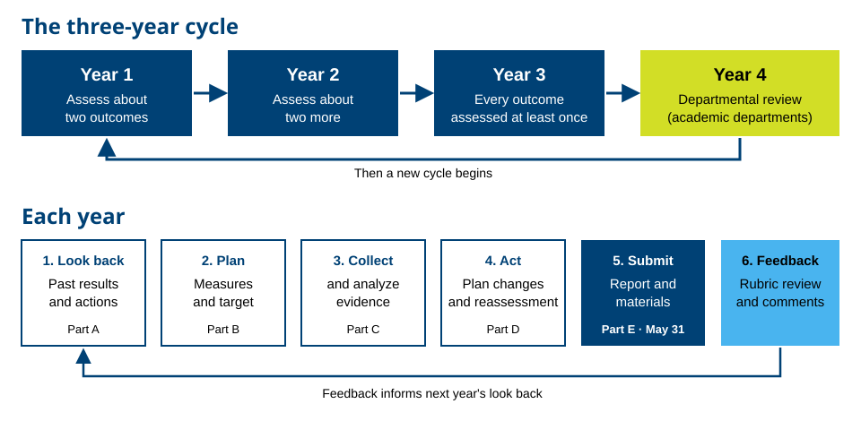

Assessment
Berea's outcomes assessment process runs on a three-year cycle for academic departments, academic and student support services, and administrative offices. Each area below has its own process outline, report template, and review rubric, followed by guides that apply to everyone.

Academic Departments
For departments assessing student learning outcomes (SLOs) in their majors and programs.
-
PDF
Assessment Process Outline: Academic Departments
How the three-year cycle works and what departments complete each year.
-
DOCX
Annual Assessment Report Template
The report form for the SLOs your department is assessing this year, with instructions.
-
PDF
Rubric for Evaluating Annual Assessment Reports (SLOs)
The rubric used to review academic department reports.
-
DOCX
Curriculum Mapping Template
Map where each outcome is introduced, developed, and demonstrated across required courses.
-
DOCX
Alternative Assessment Process for Externally Accredited Programs
For programs with specialized accreditation that follow an alternative assessment process.
-
PDF
SACSCOC Standard 8.2.a: Student Outcomes in Educational Programs
What the standard asks, in plain language, and how Berea's process meets it.
Academic & Student Support Services
For centers, offices, and services that support students, assessing program outcomes and objectives (POs).
-
PDF
Assessment Process Outline: Academic & Student Support Services
How the three-year cycle works and what each area completes each year.
-
DOCX
Annual Assessment Report Template
The report form for the POs your area is assessing this year, with instructions.
-
PDF
Rubric for Evaluating Annual Assessment Reports (POs)
The rubric used to review academic and student support services reports.
-
DOCX
SACSCOC Standard 8.2.c: Academic & Student Services
The standard and its rationale, from the SACSCOC Resource Manual.
Administrative Offices
For administrative and operational units assessing program outcomes and objectives (POs).
-
PDF
Assessment Process Outline: Administrative Offices
How the three-year cycle works and what each office completes each year.
-
DOCX
Annual Assessment Report Template
The report form for the POs your office is assessing this year, with instructions.
-
DOCX
SACSCOC Standard 7.3: Administrative Effectiveness
The standard and its rationale, from the SACSCOC Resource Manual.
Writing Outcomes
Guides for writing SLOs and program outcomes you can actually assess.
-
DOCX
Writing Clear and Measurable Outcomes
Ten suggestions for writing SLOs and program outcomes.
-
PDF
Action Verbs for Writing Outcomes
Bloom's taxonomy verbs by level, verbs to avoid, and before-and-after examples.
-
PDF
Sample Outcomes by Area
Model outcomes for academic departments, support services, and administrative offices.
-
PDF
Outcome Quality Checklist
A quick check for any outcome, matched to Criterion 1 of the review rubric.
Planning and Measures
Tools for planning your cycle and choosing evidence.
-
DOCX
Multi-Year Assessment Plan
A fill-in plan showing which outcome you'll assess in each year of the cycle.
-
PDF
Curriculum Map: Example and Instructions
A filled-in example map and how to build your own.
-
PDF
Direct and Indirect Measures
The difference, with examples for each area.
-
PDF
Setting Targets and Benchmarks
How to decide, before you collect data, what success looks like.
-
PDF
Sampling for Program Assessment
How much evidence you need and how to choose it fairly.
-
PDF
Survey Design Tips for Assessment
Writing questions and scales that give usable answers.
-
DOCX
100 Ideas for Assessing Learning and Program Outcomes
A menu of assessment methods to choose from.
Using Results
Making sense of your data and turning it into improvement.
-
PDF
Analyzing and Presenting Assessment Results
Simple ways to analyze results and show them clearly in Part C.
-
PDF
Closing the Loop
Using results to make changes, then checking whether they worked.
Reference
Background on Berea's process and good assessment practice.
-
PDF
The Assessment Cycle at Berea
The three-year cycle and the annual report steps on one page.
-
PDF
Assessment Glossary
Plain-language definitions of common assessment terms.
-
DOCX
Attributes of Meaningful Assessment
A one-page summary of what makes an assessment useful and manageable (Bresciani, 2007).
-
PDF
Outcomes Assessment Workshop Slides (June 2024)
Writing outcomes, direct and indirect measures, and setting benchmarks.
Outside Resources
Trusted organizations for going deeper. These links open other websites.
- National Institute for Learning Outcomes Assessment (NILOA)
Guides, examples, and research on assessment, including the Transparency Framework. - AAC&U VALUE Rubrics
Widely used rubrics for skills such as written communication, critical thinking, and intercultural knowledge. - Association for the Assessment of Learning in Higher Education (AALHE)
The professional association for assessment practitioners, with webinars and resources. - Accrediting standards (The Commission on Colleges and Universities, formerly SACSCOC)
The Principles of Accreditation and related policies.
Questions about your report?
The Office of Academic Affairs can help with outcomes, measures, benchmarks, and the report itself. Email smithro@berea.edu.